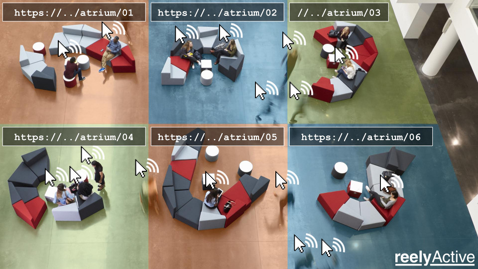
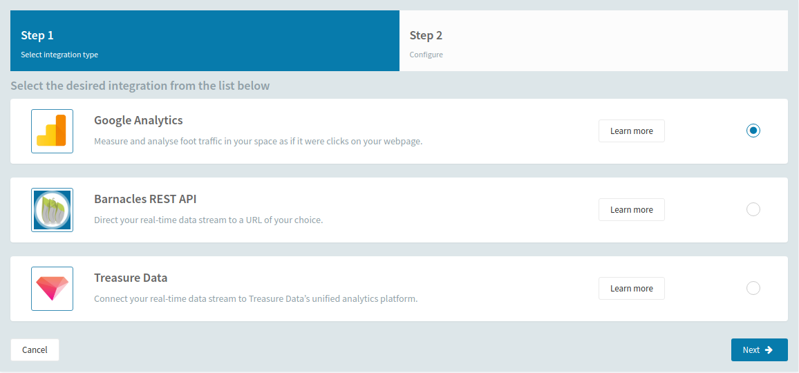
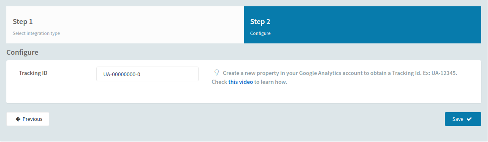
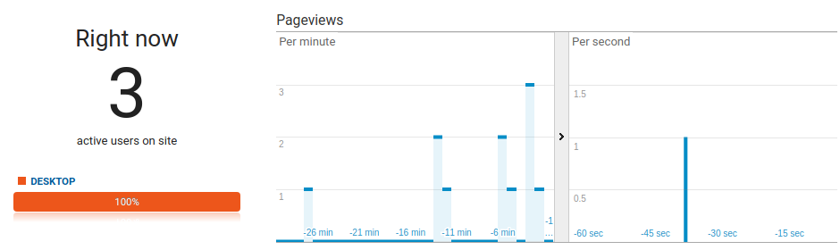

Google Analytics Integration
Measure visits to a physical space like visits to a website
The Google Analytics integration sends real-time location events to a user-defined GA account. The Google Analytics integration models "how are people browsing my webpage" as "how are people browsing my physical space?"
Each directory, itself a logical grouping of points of interest, is the equivalent of a webpage. And each real-time location event is the equivalent of a "click".

Prepare Google Analytics
Create an account/property and obtain a Tracking ID
A Google Analytics Tracking ID (ex: UA-00000000-0) is required in order to complete the integration. Users unfamiliar with GA can watch our tutorial video for detailed steps to obtain their Tracking ID.
Pareto Integration with GA
As easy as entering the Tracking ID
From the Integrations View, click the New Integration button to create a new integration. Google Analytics integration is completed with the following two steps:
Step 1: Select Google Analytics
Step 2: Enter the Tracking ID
Upon clicking Save the integration is complete and Pareto will begin forwarding events to Google Analytics. Within a few moments, it is possible to observe visitors, if present, from the Real-Time Report feature of Google Analytics.

Add Custom Dimensions in GA
Benefit from additional occupant metadata
Pareto adds seven custom dimensions to each event it forwards to Google Analytics. These dimensions include additional information and inferences about the detected devices.
Browse to Custom Dimensions InterfaceTo access these custom dimensions, it is necessary to manually assign each in the Google Analytics Admin console. The Custom Definitions interface can be reached within GA as follows:
- browse to the Admin console
- select the corresponding Account and Property
- click on Custom Definitions under the Property
- click on Custom Dimensions under Custom Definitions
The seven custom dimensions must be entered in order of Index.
Each custom dimension is entered by clicking the New Custom Dimension button and entering the Name and selecting the Scope, observing the order of the following table.
Once complete, the Custom Dimensions should resemble the screenshot below.
| Index | Name | Scope |
|---|---|---|
| 1 | Tenant ID | Product |
| 2 | Person Session? | Session |
| 3 | Main Directory | Hit |
| 4 | Story URL | Session |
| 5 | Person Probability | Session |
| 6 | Device Segmentation | Session |
| 7 | Cookie | Session |
The Custom Dimensions will typically be available in GA Reports within a day. It is normal for them not to be immediately available!